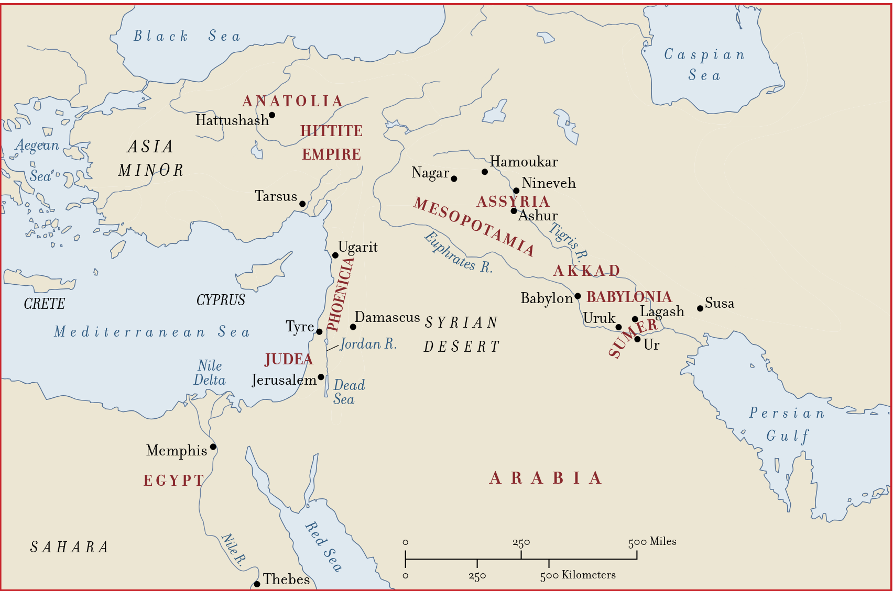
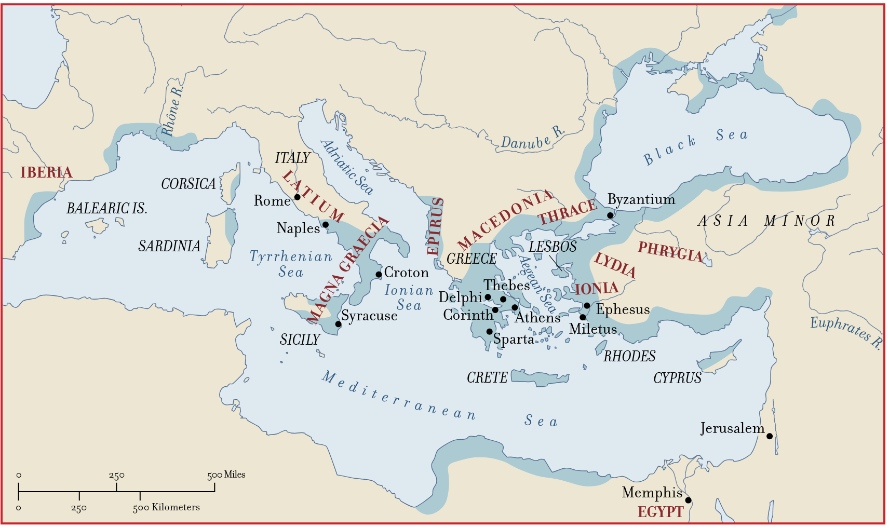
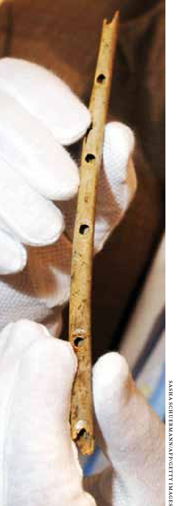
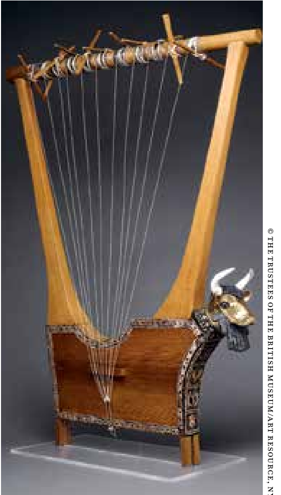
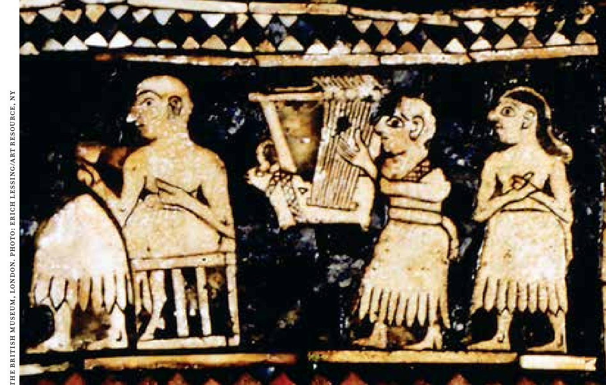
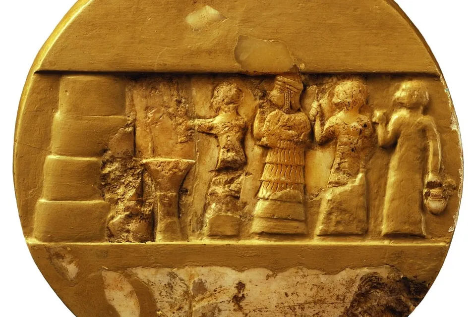
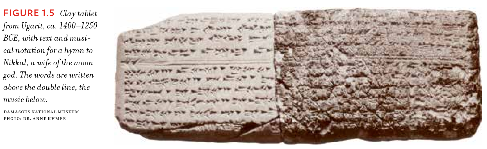
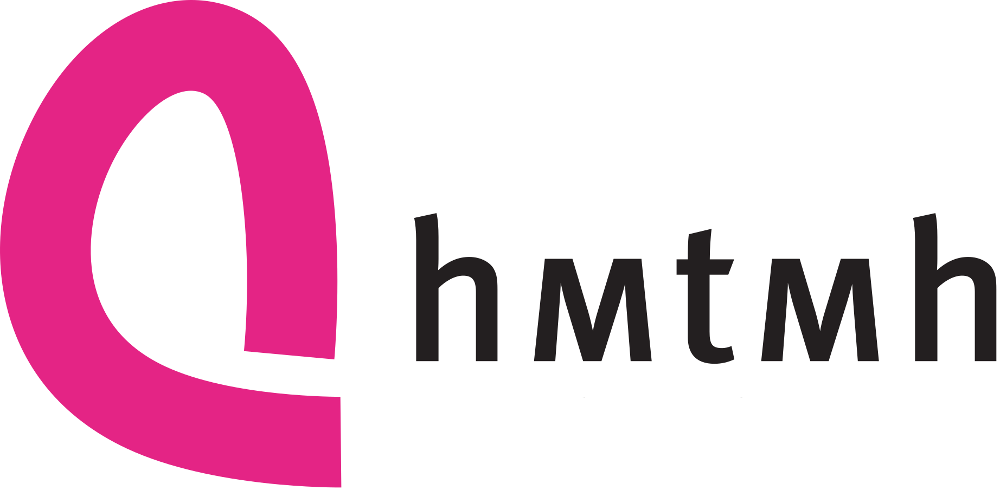

Didaktik/Methodik Gesang
HMTM Hannover
27.10.2026
→ Kurs im LMS der HMTMH
→ Protokolle bitte immer bis Mo, 18 Uhr senden an:
julian.popken@hmtm-hannover.de
und
stachurad@stud.hmtm-hannover.de

(Grout u. a. 2019, 6)

(Grout u. a. 2019, 8)


(Lament For GILGAMESH, The Gold Lyre Of Ur 2022)



